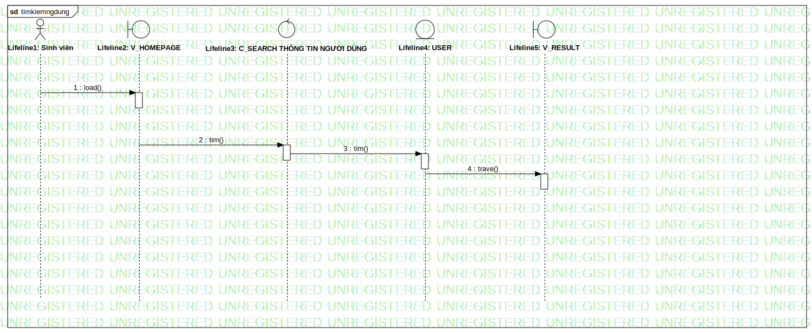

timkiemngdung
UMLInteraction
Tuong tac UTE
::
Sequence Model
::
Sequence
::
timkiemngdung
Description
none
Diagrams

timkiemngdung
Participants
Lifeline1: Sinh viên
Lifeline2: V_HOMEPAGE
Lifeline3: C_SEARCH THÔNG TIN NGƯỜI DÙNG
Lifeline4: USER
Lifeline5: V_RESULT
Messages
load() (Lifeline1→Lifeline2)
tim() (Lifeline2→Lifeline3)
tim() (Lifeline3→Lifeline4)
trave() (Lifeline4→Lifeline5)
Properties
Name
Value
name
timkiemngdung
stereotype
null
visibility
public
isReentrant
true
Owned Elements
timkiemngdung